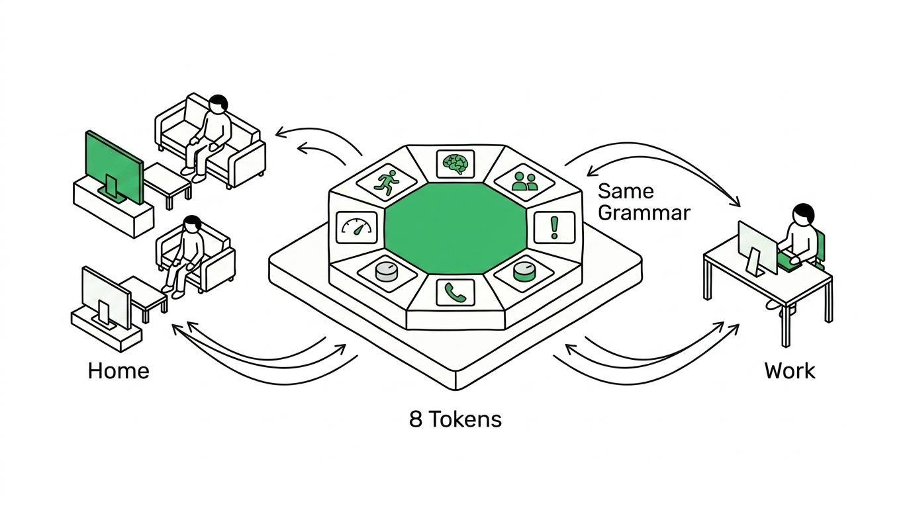

The Sales Floor
Social-Aware Filtering / Temporal Arc / Enterprise Trust Calibration
上司が近づけば画面が静かに変形し、体面は守られる。
3ヶ月後、AIは空気のように動いている——
Renが信頼を渡したからだ。
Ren（蓮）、
営業マネージャー。
300件のリードと1つのAI。
Renの朝はCRMを開くことから始まる。300件のリード。未返信メール42通。今日のスタンドアップまであと1時間。どこから手をつけるべきか——その判断だけで30分が消える。
会社が導入したSales Agentは初日から動いている。だがRenはまだ信頼していない。AIが出す答えの根拠がわからないからだ。
Temporal Arc
毎日7つの摩擦が
Renの時間を奪う
これらの摩擦はCRMの問題ではない。CRMはデータを出す。問題は「今のRenに、どの情報を、どう見せるか」の設計が存在しないことだ。
同じ8 Tokenが、
家庭も職場も
記述する
P1-P3で家庭に適用したContext Grammarを、エンタープライズ営業に展開する。Tokenの定義は変えない。コンテキストだけが変わる。靴選びとリード管理が、同じ構造で記述できること——それがContext Grammarの汎用性の証明だ。

300件の不安を
3件の確信に変える
Renの感情：「300件のリストを眺めて途方に暮れたくない。今日やるべき3件だけ見せてほしい。」CRM・メール・カレンダーの3システムを横断し、確信度付きでリードを並べる。
AIが出す答えには、
根拠が見える
「なぜこの3件？」にAIが答えられなければ、Renは使わない。3つのデータソースが交差する証拠を見せることで、Renは自分の判断を補強できる。
スタンドアップまであと5分。
画面共有の準備をしなければ。
有能に見られたい。
でも未達の数字は見せたくない
画面共有した瞬間、個人の営業数字が全員に見える。CopilotもEinsteinも「情報を隠すべき瞬間」を設計していない。Social Exposure × Disclosure Dialが、場にいる人間に応じて表示情報を自動で再構成する。
画面共有が始まったその瞬間、
数字が消える
Renは何も操作していない。Social Exposure Tokenが「TEAM + BOSS」を検知し、Disclosure Dialが「PARTIAL」に自動調整。金額は進捗バーに、達成率は非表示に。Renの体面は守られた。
午後の集中。
Lead Bへの再アプローチを考えている。
逃したくない。
でも30分かけたくない
Renの感情：「雑なメールで商談を失いたくないが、1通30分は非効率だ。」AIのドラフトを同じ画面で確認・編集・承認できるApproval Gateで、効率と品質のトレードオフを解決する。
先日はデモのスケジュール調整が叶わず残念でした。御社の課題について、別のアプローチをご提案できればと思いご連絡しました。
来週のご都合はいかがでしょうか。
ビールは黙って出す。
15万円のワインリストは勝手に開けない
Autonomy Dialは一直線に上がるものではない。ドメインごとに天井がある。信頼が蓄積されても、不可逆性が高いアクションのフリクションは残す。
| 営業アクション | リスク | Autonomy上限 | なぜ |
|---|---|---|---|
| 社内メモの要約 | ゼロ | Auto | 間違っても影響なし |
| フォローアップ | 低 | Notify | 送信取り消し可能 |
| 見積書の作成 | 中 | Confirm | 金額が関わる |
| 契約書の送付 | 高 | Suggest | 法的拘束力 |
| 値引き交渉 | 最高 | Suggest + 上長承認 | 利益に直結 |
会議中に
重要な電話が鳴る
Renはチームミーティングの最中。スマートフォンが震える。Lead Aの田中様からの着信。来週のデモの最終確認かもしれない——今出なければ、次のチャンスはいつ？
しかし今のミーティングも重要だ。Q4の戦略決定。上司が目の前にいる。
AIは決めない。
両方の重みを見せて、Renに委ねる。
単なる「応答/拒否」ではない。発信者のコンテキスト、現在のミーティングの重要度、そして第3の選択肢をAIが提示する。
ステージ: Proposal → Close
来週火曜デモ確定
過去の着信: 重要確認のみ（3/3回）
種別: 定例（毎週）
残り: 15分
Renの発言済み: 完了
日が傾く。
今日のRenは、どれだけ前に進めたか。
今日何をしたか構造化して、
明日に引き継ぐ
Renの感情：「今日の成果を実感したい。明日の自分に、今日のRenが学んだことを渡したい。」AIが1日のアクティビティを自動構造化し、Brain学習のインジケーターも表示する。
Brainが今日学んだこと
RenのBrainは3層構造。今日の行動は「Right Now」層に記録され、パターンが蓄積されると「Accumulated Learning」層に昇格する。Renはこのプロセスを見ることで、AIへの信頼を判断できる。
Autonomy Dialは
時間で進化する
Week 1 の全 Suggest から、Month 3 の安定した Dial 分布へ。「10回連続承認で昇格提案」は機械学習ではなく、単純なカウントルール。今日から実装できる。
AIが初めてRenを観察
12通中10通を無編集承認
精度 72% → 89%
Auto 2 / Notify 2 / Confirm 2
祝日ミスで Notify → Confirm に後退 → 改善後に再移行
3ヶ月後のDial分布
Month 3 のRen。6つのドメインで、それぞれ異なるAutonomy位置が確立している。全部Autoにはならない。全部Suggestでもない。ドメインの不可逆性に応じた天井が設計されている。
| ドメイン | Week 1 | Month 3 | 天井 |
|---|---|---|---|
| 社内メモ要約 | Suggest | Auto | Auto |
| フォローアップ | Suggest | Notify | Notify |
| リード優先順位 | Confirm | Notify | Notify |
| 見積書作成 | Suggest | Confirm | Confirm |
| 契約書送付 | Suggest | Suggest | Suggest |
| 値引き交渉 | Suggest | Suggest + 上長 | Suggest + 上長 |
Disclosure × Social
エンタープライズでの発火
P1-P3で家庭（TVに価格非表示）に使ったDisclosure × Social Exposureの連動は、エンタープライズでさらに鋭い形で発火する。「隠す」の設計は、家庭でもオフィスでも同じ構造。
TVに靴の価格を非表示にする。子供の前で「高い」と言われたくない。
会議室モニターに営業数字を非表示にする。上司の前で未達を見せたくない。
Renの1日を振り返る
朝の不安が確信に変わり、体面は守られ、効率と品質が両立し、緊急時にも判断材料があり、1日の学びが明日に引き継がれる。これがContext Grammarによるエンタープライズ営業の1日。
Context Grammarは
OSレイヤーで動く
Context Grammarはアプリの機能ではない。OSの下に位置する設計言語レイヤーだ。CRM、メール、カレンダーはその上で動くアプリにすぎない。Tokenの読み取り、Brainの記憶、Rule Engineの変換——すべてがアプリの下で静かに機能する。

同じ8 Tokenが、家庭も職場も記述する
| Token | P3 — 靴の買い物 | P4 — 営業AI | 共通構造 |
|---|---|---|---|
| ① Physical State | つり革 → 片手操作 | 歩行中 → 片手スマホ | Physical変化 → UI密度変化 |
| ② Cognitive Load | 電車での分散注意 | 会議3つの間の5分 | 負荷推定 → 選択肢数の調整 |
| ③ Social Exposure | 家族の前で価格を隠す | 上司の前で数字を隠す | 社会的文脈 → 情報フィルタリング |
| ④ Priority Weight | 子供の好み > ブランド | Q4目標 > 既存案件 | 衝突解決 → 優先構造の適用 |
| ⑤ Form Factor | スマホ → TV変形 | デスクトップ → プロジェクター変形 | サーフェス追加 → UI再定義 |
| ⑥ Feasibility | 在庫・サイズ・配送日 | 予算残高・Q4残日数 | 制約 → 不可能な選択肢を除外 |
| ⑦ Autonomy Dial | リサーチ=Auto、購入=Confirm | メモ=Auto、契約=Suggest | ドメイン別の段階的自律 |
| ⑧ Disclosure Dial | TVに価格非表示 | チームに営業数字非表示 | Social × Disclosure の連動 |
1つの設計言語で、
家庭も職場も
記述できる。
Token自体は変わらない。コンテキストだけが変わる。
靴選びとリード管理が、同じ構造で記述できること——
それがContext Grammarの汎用性の証明だ。